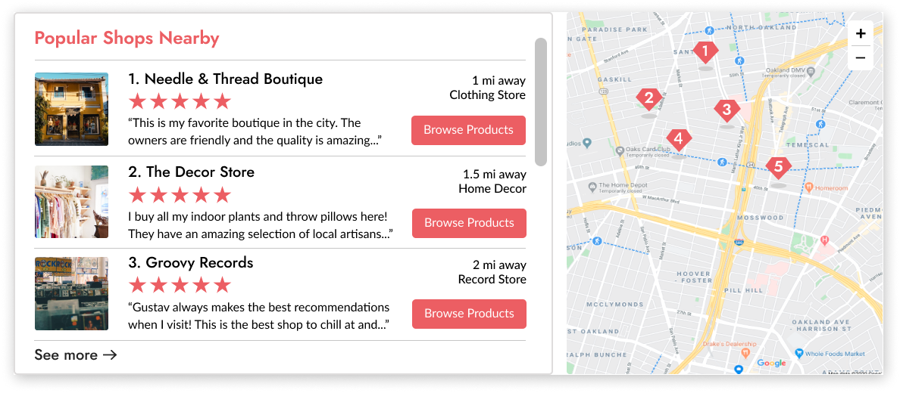

Local Gems is an e-commerce platform that makes it easy to shop local and support small businesses near you.

Overview
Role
UX Research, UX Design,
Information architecture,
Visual design and testing
Deliverables
High fidelity Invision prototype,
competitive analysis, user
personas, user stories, user flows, logo, brand style guide, UI design
Tools used
Figma, Invision,
Google Forms, Illustrator,
Draw.io, Lookback.io, UsabilityHub
Problem
Through our research I discovered our users wanted to shop local and support small businesses more often. Common barriers for them were the convenience of online shopping and the difficulty of discovering products locally. Other concerns were shopping safely in person during a pandemic, which makes them them shop local less often.

Solution
To address these problems I created a customer-facing e-commerce platform, (with a focus on the desktop experience) where customers can shop locally at small businesses online, browse in-stock items, order items for pickup or delivery and discover shops near them.
Research and Discovery
User Research
I conducted a survey to discover user habits, pain points and needs when it comes to shopping local. I came away with several key findings:
54%
browse for retail items on mobile devices but make the actual purchase on desktop devices most of the time.
75%
said they would be interested in ordering items for pickup from local businesses
51%
of retail purchases are made online vs in- person (not including groceries)
58.6%
of survey respondents rarely shop at local small retailers but want to more often
Pain Points:
What are the main reasons users don’t shop local more often?
59% Hard to know what’s in stock
54% It’s too expensive
47% It’s inconvenient
Motivations:
What are the top reasons users like to shop local?
75% Supporting small businesses
85% Seeing merchandise in person
37% A more unique selection of items
Features:
What features would tempt users to shop local more often?
91% Seeing what items are in-stock
87% Ordering items for delivery and pickup
85% Detailed info about each product
User Survey Analysis
Based on the findings I realized I needed to build an e-commerce platform that shows which items are in stock nearby and offers both pickup and delivery options. I initially assumed that only offering pickup options for shopping local would be enough, but the research showed users wanted delivery options as well. One surprising thing I found was that while users shop online on both mobile and desktop devices, they tend to use mobile devices for browsing and desktop devices for making the actual purchase. Because of this, I decided to design both mobile and desktop versions but decided to prioritize the desktop version in user testing to simulate the likely purchasing experience. When I learned about users’ motivations for shopping local, I knew I had to create a premium brand experience and product offerings to appeal to their desire to support local businesses, find unique or handmade items or to see merchandise in-person.
Competitive Analysis
To find an opportunity for an e-commerce platform to compete in the marketplace, I conducted a competitive analysis on three e-commerce apps used most often by our survey respondents: Amazon, Etsy and Google Shopping. All of them include features that allow you to shop local, but the experience leaves much to be desired:
Strengths:
E-commerce behemoth, huge selection of products, fast shipping and seamless checkout experience.
Weaknesses:
Their “shop local” feature is hard to find, and only offers products by state instead of local city. Information about the “local maker” is hard to find.
Strengths:
Dominates search engine traffic, “Available Nearby” feature makes it easy to find in-stock products near you at large retail chains. Nice map feature shows you how close the store is.
Weaknesses:
Hard to know which items are available for pickup or delivery, only features big brands, not independent shops. It links out to 3rd party sites which disrupts the purchasing experience.
Strengths:
Huge global platform for purchasing unique items from makers or individual sellers. Fun experience that makes it enjoyable to discover unique items
Weaknesseses:
Its “Shop Location” category filter requires you to type in your city and is hard to find. No local products include curbside pickup options.
Findings
Though many of our respondents use those apps, their shop local features are hard to find and organize information in a confusing way. None of them feature local, independent shops, just big box stores or individual sellers. My research showed that users want to shop local and support independent stores more often, but find it hard to do so because of the convenience of e-commerce and safety concerns surrounding the pandemic. I found there was an opportunity for a an e-commerce platform to compete if it included features that:
- Make it easy to discover and purchase products nearby
- Show well-organized information about which products are in-stock nearby and available for pickup or delivery
User Personas
As trends in my research emerged, I conducted follow-up interviews with respondents to better understand their survey responses and learn more about their shopping preferences. This helped me craft personas that fell into three categories: those who prefer shopping local to e-commerce, those who are evenly split between the two, and those who rarely shop local and do the majority of their shipping online.

Audrey
Goals:
Prefers shopping local to online. She wants to check which items are in stock so she can shop local in-person at her favorite shops
Frustrations:
“It’s hard to know what items are in stock nearby - I’m also concerned about COVID and will be shopping in person less”
Mariah
Goals:
Get the best deal possible on items when shopping online. She likes shopping local in person but needs items for pickup and delivery options
Frustrations:
“There aren’t many cool independent retailers near me and shopping in person is a hassle”
Alex
Goals:
Wants shopping local to be as convenient as Amazon, would only shop local if they had delivery options
Frustrations:
“I rarely shop local because it’s inconvenient and too expensive”
User Stories
The research had generated a lot of ideas for potential features to include but I knew I needed to narrow the scope down to help users achieve two main goals:
- Find products they’re interested in
- Read information about these products to check if they’re in stock nearby, or decide to order them for pickup or delivery
To identify the key features that would help them achieve these goals, I created and prioritized 15-20 user stories that would help us build the minimum viable product of this app

Information Architecture
User Flows
Next, I created User Flows to map out our highest priority user stories.


Site Map
To translate the user flows into screens I created a site map to determine the structure of the app.

Sketching and wireframing
I sketched out wireframes for each screen needed to complete the tasks in the user stories and flows. Since our research revealed that our users like shopping local, I wanted to make sure promote that mission on the landing page and give search engine traffic a way to search categories of products. Since users wanted to see which items were in stock and order for pickup or delivery, I made sure to include that as a filter on the category pages as well.
Homepage wireframes

Category page wireframes

Visual Design
Branding exploration and discovery
To kick start this process, I created a moodboard of the kinds of shops I wanted to support on our platform to help us mind-map and list-make the brand characteristics I wanted the platform to convey. I used this list to decide on the brand name Local Gems, a common phrase to describe small businesses, and one that would tell new users what our platform is about: shopping locally for quality products at small businesses online. Brand characteristics are friendly, fun, premium, hip, handmade, locally made, artisan, artsy crafty, slick, modern, warm, diverse, and inclusive.

Logo Development
I decided on the name Local Gems and created dozens of sketches to convey this concept
Preference Testing
I refined the most promising sketches in Illustrator and came up with 3 options. To find out which was the strongest I ran a preference test with 15 people. The red mark emerged as the clear winner.
The Final Logo
The final logo mark combines the concepts of a location marker and gem, and uses the typeface Raleway for it's modern, friendly and slightly quirky look. The mark itself is versatile and can be used as a location marker on a map to indicate which local shops the platform will be partnered with.
Style guide and brand assets
I created a mood board to develop a brand color palette and style guide:
Preference Testing
Using the new brand guidelines I created high fidelity mockups of the homepage and conducted a preference test to select the strongest version, trying to find the right balance between appealing to user’s desire to support local businesses and make it easy for them to find products they were interested in. I created these under the assumption that they would consent to the app using their location. I found that users preferred the design with simplified messaging, more visuals and more accessible categories of product they could peruse:
36% preferred this design
64% of users preferred this design
Prototyping and Testing
User testing high fidelity prototypes
I user tested the high fidelity desktop prototype on three users to complete these tasks:
- Browse for and filter different categories of products
- Search for an item
- Order an item for delivery
- Order an item for pickup
Users were able to understand what the app was about and complete the tasks of browsing through categories and purchasing items for delivery. There was a little confusion about which items were available for pickup vs delivery on the product details page, so I updated the designs for the icons and included more information about how far away each shop was:
Before
After
Users expressed some confusion about the organization of the confirmation page and wanted more information regarding their order, so I moved the “Keep Shopping” button to the right, added an order confirmation number and directions to the shop if they were ordering for pickup.
Before

After

Further testing and refinements/Adding a new map feature
I also received feedback from all users that they’d like to see the stores on a map to see how close they are to them and that they were interested in learning more about each shop. To help users achieve these goals, I went back to the drawing board and created a map feature on the homepage which would show the shops nearby on a map and link to a corresponding landing page for each shop which would showcase their products and tell users more about each shop:
New map feature that shows nearby shops and links to shop landing pages:
Next, I user tested the map feature: users were able to discover shops nearby on a map, learn more about each store and browse their products. But they seemed to expect to be able to filter their results had some additional suggestions like adding a “Your are here” location marker, filtering and sorting to to the map, and item categories to the shop landing pages.
Before
After
Before
After
Final Prototype
After much testing and iteration I finalized my desktop and mobile prototypes. This easy to use web app lets users shop local online and:
Check which items are in stock nearby
✓ Up to date inventory
✓ Local sales and deals
Order items for pickup or delivery
✓ Same-day contactless curbside pickup
✓ Flexible shipping options

Discover small businesses near you
Local Gems makes it easy for you to shop locally with the convenience of e-commerce. Our platform has partnered with thousands of independent retailers in 5000+ cities to bring small businesses online during this pandemic. Shopping locally supports your community, creates jobs in your local economy and is a more sustainable way to shop
Conclusion
Overall, I had a lot of success with a “product-first” approach to the design. Users are looking for products first, not shops, and discovering local businesses is a benefit that happens further down the funnel. I learned the important of including as much relevant information as possible throughout the purchasing experience, because our users are very savvy when it comes to online shopping and need to feel we’re trustworthy and that they have enough information to make a decision to purchase. For example, I thought it would be enough to show that products were within 5 miles in their city of choice, but user feedback highlighted the importance of showing exactly how far away each product was from them so they could decide whether to order the item for delivery or walk across the street for curbside pickup. I learned that users want shopping local to be easy, and to highlight the local aspect of the shopping experience.
One of the most challenging and enjoyable aspects of the problem was deciding how to filter through just how much rich data I got from our research. There’s a lot of diversity in how people shop online vs shopping locally and I knew I had to provide a lot of flexibility for people to use the platform in different way. I initially thought that a platform allowing people to shop locally for curbside pickup would be sufficient, but a lot of respondents in the survey made it clear that the ability to order items for delivery would tempt them to shop locally more often. Other respondents preferred shipping locally in person, and wanted to use an app like this to check which items were in stock and go look at the item in person.
Since one of the purposes of this app is to help users discover local shops, and some feedback I got was to show the shops’ locations on a map feature. All my mvp high priority user stories had been tested and validated but the feedback convinced me that showing store’s on a map and showing more information about each store was essential to making this product succeed by making each shop seem more real and compelling to users. In the end, I believe adding this feature paid off.
Another problem I’d like to address if I had more time is the small business side of this marketplace. I choose to go the customer-facing route for the time being but a platform like this needs to solve problems like inventory and payment processing for small business owners as well and it’s something I’d like to research and test if I had more time.
Back to top